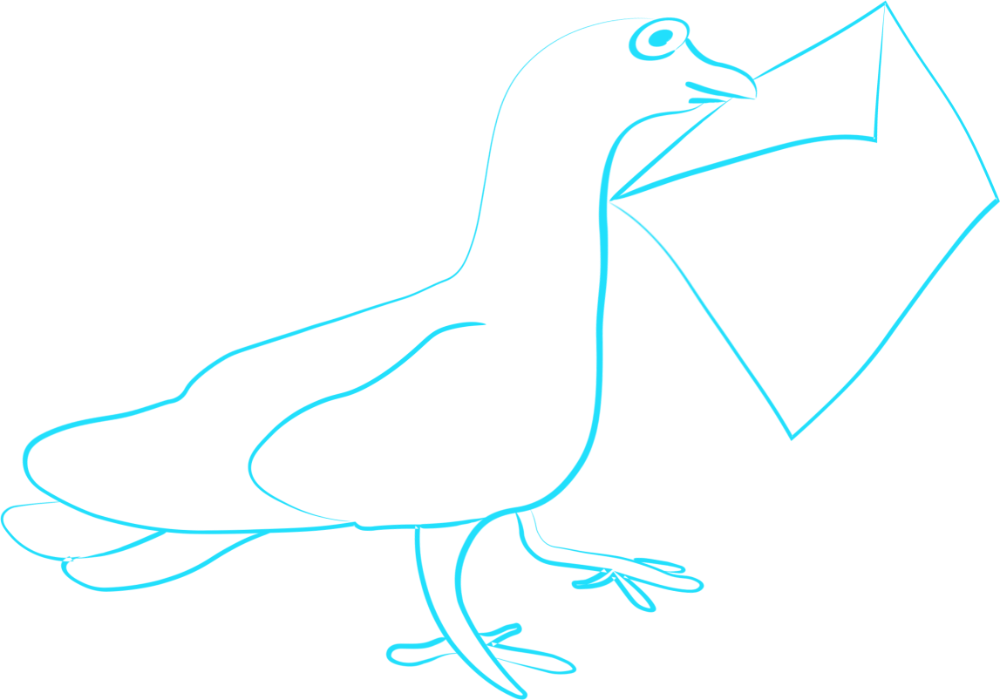

Slierten mist zwerven rond mijn benen. Net zat ik nog in Bus 21. Het was warm, zweet parelde langs mijn slapen, mijn zoon sliep. Nu loop ik over een smal pad langs eindeloos diepe bouwputten. Een heipaal beukt zich een weg naar het binnenste van mijn oor.

Lachende Japanners passeren mij. Een van de Japanners verandert in een vrouw. ‘Waar is het postkantoor,’ vraagt de vrouw. ‘Dat bestaat niet meer,’ zeg ik. ‘We werken hier alleen nog maar met postduiven.’
Een auto met een Frans nummerbord en op het dak een opblaasbare Smurf met een enorme penis rijdt achteruit. De vrouw rent er achteraan. De auto en de rennende vrouw worden kleiner en kleiner. Ik kijk voor me. Daar staat het postkantoor.
Binnen wordt ik ontvangen door Raymond Queneau. Hij lijkt verdacht veel op Harry Mulisch. Dat zeg ik tegen ’m. Queneau neemt een trekje van zijn pijp. ‘Dat komt,’ zo zegt hij mij, ‘omdat ik onvindbaar ben.’ ‘Maar ik heb u toch gevonden,’ antwoord ik. ‘Niets is wat het lijkt,’ zegt Queneau. Hij kijkt mij doordringend aan. ‘Walk like an Egyptian,’ zingt hij, en doet het dansje. ‘Het gaat er niet om wat je zingt, maar hoe je erbij danst,’ zegt een medewerker van het postkantoor.

Binnen wordt ik ontvangen door Raymond Queneau. Hij lijkt verdacht veel op Harry Mulisch. Dat zeg ik tegen ’m. Queneau neemt een trekje van zijn pijp. ‘Dat komt,’ zo zegt hij mij, ‘omdat ik onvindbaar ben.’ ‘Maar ik heb u toch gevonden,’ antwoord ik. ‘Niets is wat het lijkt,’ zegt Queneau. Hij kijkt mij doordringend aan. ‘Walk like an Egyptian,’ zingt hij, en doet het dansje. ‘Het gaat er niet om wat je zingt, maar hoe je erbij danst,’ zegt een medewerker van het postkantoor.
Beoordelen
Alle beoordelingen
15 beoordelingen gevonden
Elizabeth Ogasawara
4
10-10-2018
Prachtig verhaal. Deze ga ik delen!
Jurgen Entingh
5
11-10-2018
Ik vond dit verhaal supper tof. Het is zo goed geschreven. Ik zou de autheur graag willen ontmoeten!
Fatima Simsek
5
14-10-2018
Het verhaal was erg leuk, ik lees dit altijd aan mijn dochter van 5 in de trein.